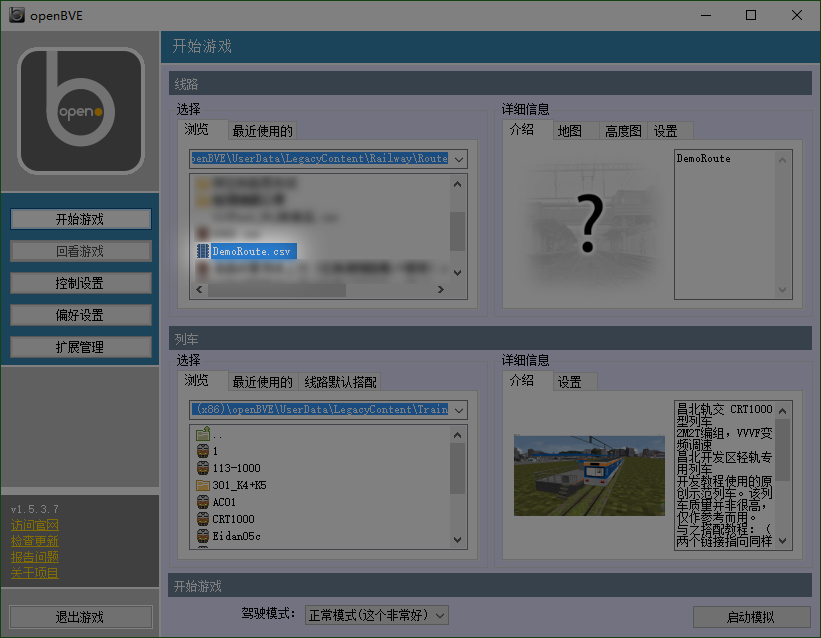

比起干讲理论，实践更能让人清晰地了解知识。现在就带大家写出大家的第一条线路。
事实上，虽然写出一条高质量的openBVE/Hmmsim线路是一个技术活，但是写出一条能玩的线路并不是一件难事！按照openBVE的基本要求，只要满足以下条件，就是一条可以游玩的线路：
- 是一个按照CSV线路格式编写的CSV文件。做线路可不是涂鸦，线路文件是有一个特定的编写格式的。
- 文件中至少按照格式指令定义两个车站。一条线路必须有起点站和终点站。
- 文件中指定该线路的配套列车。没有列车怎么玩？嗯？
- 文件中至少按照格式指令载入一个物件模型或设定一种轨道。物件模型是线路的全部可视内容，没有模型的线路就真可谓“好一似食尽鸟投林，白茫茫大地真干净”——空空如也。openBVE通过这一方式判断一个CSV文件是否是线路文件。
由于让您复制粘贴代码实在是件没有必要的事，我们已经随配套线路资源一起附带了一条最简单的线路。打开openBVE，并在线路列表中寻找DemoRoute启动。
小技巧1：是不是觉得右下角的列车信息显示区域太小了，显示不开所有的文字？最大化窗口即可解决问题。
小技巧2：如果感觉图片太小，可以在Firefox中右键选择【查看图像】（看完后点击左上角后退按钮），
或在Chrome中右键选择【在新标签页中打开图片】。

效果如图。该线路载入了一个轨道模型，所以您能看到轨道。线路包括相距500米的两个车站，没有任何外景，唯一的物件是放在轨道旁的默认停车位置牌。虽然游戏性显然是不尽如人意的，但是它可以玩嘛！另外，如果您不清楚该如何控制openBVE中的列车，请参见列车基础控制教程。
接下来，我们就分析一下这个线路文件，来向大家简单介绍一下线路开发的基本格式。
浏览到LegacyContent/Railway/Route/DemoRoute.csv，右键并选择带Notepad++的那一项打开，并在顶端菜单栏选择[语言]->[OpenBVE]。我们来看看这个文件内部的秘密！
With Options ; 一定写上这个，不然您会后悔 .ObjectVisibility 1 With Route With Train .File CRT1000 .Run(0).Set 0 .Flange(0).Set 0 With Structure .Rail(0).Load zbx1425/tutorial/rail/gndblst0.csv With Texture With Cycle With Signal With Track 0 .Sta DemoStart;;;;L;;;;30 80 .Stop 1 500 .Sta DemoEnd;;;;L;;;;30 580 .Stop 1OpenBVE线路文件的最基本元素是指令。指令就是你告诉游戏你要干什么——这儿放个房子！这儿加个车站！发号施令的感觉有没有？哈哈！
为了便于编写，使文件结构清晰，OpenBVE游戏中的指令都是分在几个命名空间中的。虽说这个名字看起来很高大上，但事实上这就是个跟分类意思差不多的东西，所有的指令根据用途被分为几类。指令的名称分为两部分，中间有个点，前面是分类，后面是真正的指令名。比如说 Track.Sta 这条指令，Track的意思是轨道，Sta是Station的简写，意思是车站，这条指令的意思就是 在轨道上放一个车站 。简单明了不是吗？各个命名空间中的指令都有着不同的用途（由于Hmmsim功能较少，不支持一部分内容），它们的用途分别是：
| 命名空间 | 用途 | Hmmsim | 命名空间 | 用途 | Hmmsim | |
|---|---|---|---|---|---|---|
| Options | 调节OpenBVE的程序设定，使线路正确加载 | 不支持 | Route | 设定线路的基本信息和参数 | 不支持 | |
| Train | 加载线路所用列车，设定列车配置信息 | 支持 | Structure | 加载线路所用模型 | 支持 | |
| Texture | 加载线路背景图片 | 支持 | Cycle | 设定循环地面和轨道，扩展单段长度 | 支持 | |
| Signal | 加载线路所用信号机模型 | 不支持 | Track | 设计全线轨道一路下来的车站、风景等 | 支持 |
可能有的读者看到这儿就说啊：“不对啊，我怎么连Track.Sta的影子都没看见，只看见一个With Track, .Sta呢？对啦，With指令是一个特殊的指令——它规定从它以下所有的直接以点开头的指令都和它指定的这个命名空间有关。这也是非常合乎情理的，毕竟大家都习惯把一类的东西搁在一块儿，这下什么Track啊Structure的分类写上几十遍几百遍，大家也都烦了，不如这样省点事。比如说，下面两段代码实际效果相同：
With Track 0,.Sta DemoStart;;;;L;;;;30 80,.Stop 1 500,.Sta DemoEnd;;;;L;;;;30 580,.Stop 1 ;不使用With，可以看到Track出现四次 0,Track.Sta DemoStart;;;;L;;;;30 80,Track.Stop 1 500,Track.Sta DemoEnd;;;;L;;;;30 580,Track.Stop 1（在CSV线路文件中，逗号也可以表示换行，来把分行内容写在一行上，用以节省空间）
不过可能大家会发现，指令的后面还有东西呢！比如说Track.Sta，后面怎么还有那么一大堆呢？这些叫作参数。什么是参数呢？就比如说如果要设置一个车站，可不是光说“设置一个车站！”就完了，还得想想车站叫什么，停车多长时间，哪边开门？这些就是通过参数的形式给出的。通俗地来说，指令就是要干什么，参数就是要怎样干。各个参数之间使用分号（英文半角的那个）分隔。详细介绍各条指令的参数的含义超出本教程范围，但我们还有一篇开发文档，那里可是进行了详细的介绍。比如说，我们拿出起点站的定义举个例子：
Track.Sta DemoStart;;;;L;;;;30我们再看一眼文档里对于Track.Sta指令的解释：
站名：该车站的站名。将会在时刻表和提示信息中显示，所以不应留空。
到达时间：玩家驾驶的列车应当到达此站的时间。可以使用特殊值表示额外信息——见下。
发车时间：玩家驾驶的列车应当从此站发车的时间。可以使用特殊值表示额外信息——见下。
停车铃：指示停车警铃设备（如果列车有安装）是否应该鸣响以提示列车驾驶在这站停车。默认值是0。
开门方向：指示列车应开启的车门方向。默认值是0，L为左，R为右。
强制红灯：指示是否应该将最后一个停车点后方的信号机（发车信号机）在玩家驾驶列车接近时设为红色。默认值是0。
信号系统：指示从此站到下一站之间的区间安装的列车信号系统。默认值是0。
到达广播：一个相对于Sound文件夹的路径，指向列车停站时播放的音频。
停车时间：一个正浮点数表示列车在车站的最小停车时间（包括开关门时间）。默认值是15。
乘车率：一个非负浮点数表示在该站列车上乘客的相对数量。作为参考，100差不多是正常载客量，而250则表示超载列车。输入值应当在0~250之间。默认值是100。
发车广播：一个相对于Sound文件夹的路径，指向在发车前（发车时间-关门时间-音频时长）要播放的音频。
时刻表编号：一个非负整数，指示一个由Train.Timetable指定的，从此站开始要显示的时刻表。默认保持上站设定。
按照顺序一一对应，一目了然！请注意有些地方留空了，有些参数没有给出，这意味着这些地方采用默认值。例如，在到达广播处留空表示没有到达广播。我们就可以看出，这条指令设定了一个叫作DemoStart，开门方向向左，停车30秒的车站。
大家可以前往文档对照查找其它的几条指令，来弄清它们的具体意思。
请您务必搜索查看文档中对命令的解释，来更好地了解指令。
此外，大家可能还会发现一些分号开头的指令。这些是什么呢？这些叫作注释。注释是给人看的，用来让大家编写线路时思路更清晰。比如说一个线路可能七扭八弯，有许多车站，这时就可以用注释标定车站等重要地点的位置。注释既可以写在单独的一行上，也可以写在一行的末尾。
此外，您可能还会发现有些行上写的并不是指令，而是数字。这是CSV线路格式每条指令的基础和意义所在。这些数字被称为主轨道位置。在OpenBVE和Hmmsim中，真正意义上的轨道只有一条，就是玩家控制的列车所在的那条，一切其它的轨道都是只作装饰作用而不能行车的。游戏中的所有物件也都是相对于这条轨道来设置的，放在这条轨道旁边的，毕竟物件放在玩家看不到的地方毫无意义啊。而这个主轨道位置，就是指定一个点到主轨道开头位置的距离。
您可能会注意到上述的指令的定义还是缺点什么——既然有了干什么、怎么干，为什么就没有在哪里干呢？像我们刚刚设定车站和停车点时，都没有在指令中指定它们的位置。这就是主轨道位置的意义所在。它指定它下方所有指令的生效位置。每条Track命名空间里的指令都根据它上方的第一个主轨道位置来确定它的生效位置，也就是说主轨道位置是可以一对多的。例如，如果我们把刚刚的代码以主轨道的形式表现出来，那就是：
增设车站DemoStart
● ●
80米处
设定车站停车位置 500米处
增设车站DemoEnd
● ●
580米处
设定车站停车位置
请您注意这条线在左边不出头，而在右边是出头的。这是因为主轨道不会结束，而是向前无限延展。您在实际游戏中也可以看到这一点。相反，主轨道并不向后延伸。所以我们建议您在实际开发线路时不要像这条最简线路一样把车站放至开头，而是在后方留足空间，以便之后放置更完善的外景。
OpenBVE游戏中的线路都是线性的，由单一的一根轨道组成。这使我们制作时可以条理清晰，但是这也意味着在曲线方面我们可能需要做一些复杂的数学计算，来准确算出曲线造成的位移。但是对于现阶段的制作者来说，可能还不会很多的遇到这些问题。
● 思考
- 搞懂这条最简单线路中的每条指令。
- Options命名空间的指令一般都放在开头，为什么？Structure、Route和Train等又为什么一般放在开头？
- 为何Options.ObjectVisibility不加会后悔？（您可找到第二章安装的西条线线路删除并对比尝试）
- 为何要有Train.Run(0).Set 0 和 Train.Flange(0).Set 0 这两条指令？（您可删除尝试）
请您不要直接前进到下一讲。请自行搜索思考和查看这几道问题，搞懂出现的这几条指令的意义和用法。对于3和4小题，请您务必自行实践删除尝试。不要急着翻页，不要急着翻页。请自己先想一想，试一试。点击下方绿色按钮可以进入答题页，互动答题，查看答案。
在实践第3题时可能难以察觉到变化。在此给您一个提示：按F2切换车外视角，方向键转动视角方向；列车向前开，转头往后看。
好的！在了解编写线路的基本格式并尽量试图想明白思考题后，我们可以根据知识对线路稍加修改，增加它的可玩性。我们建议您将本章重读几遍来深刻了解和记忆本章内容，而不是走马观花地不停翻页。在您准备好后，请从上方线路图中选择下一讲。